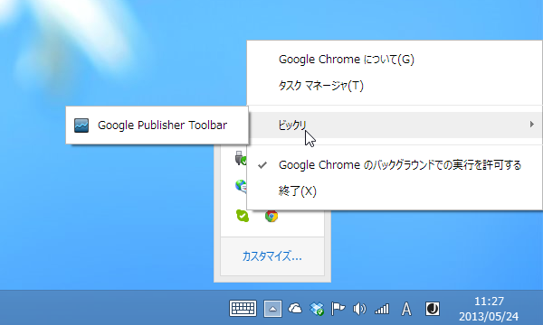
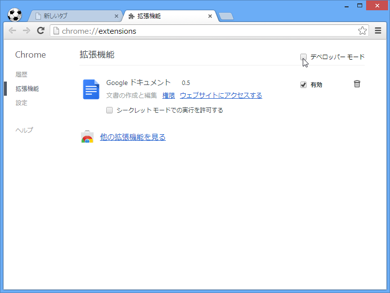
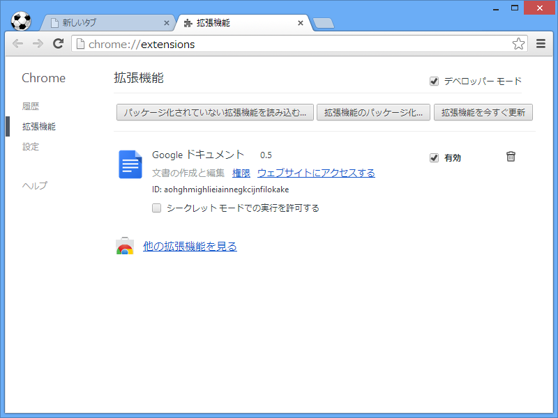
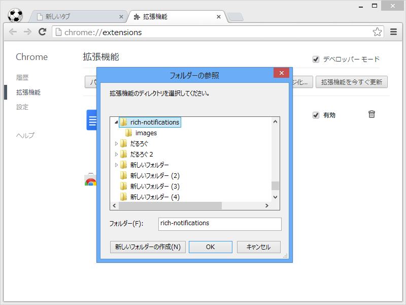
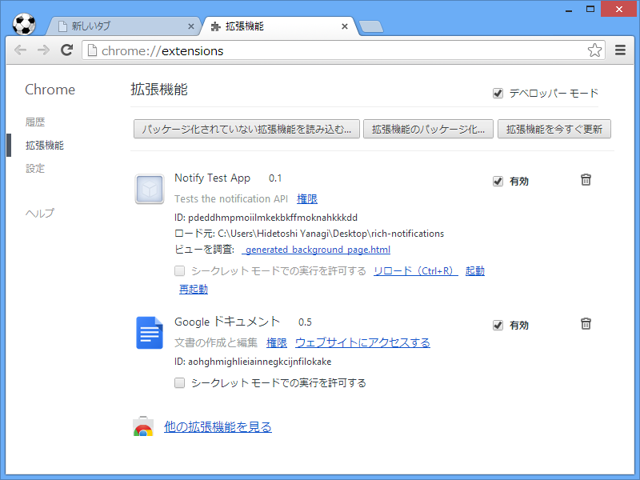
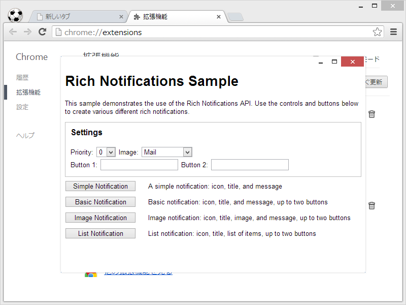
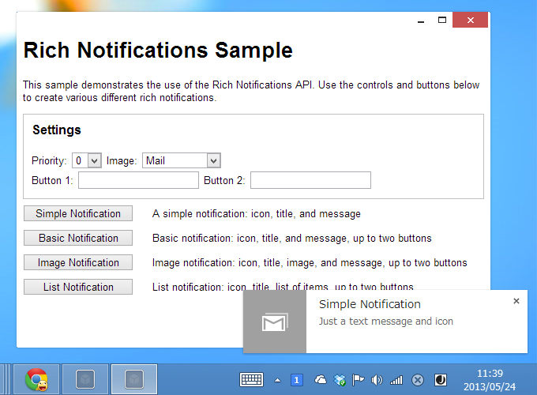

Google Chrome 拡張機能のサンプルを試す
公開日：

新レンダリングエンジン“Blink”を搭載した「Google Chrome 28」ベータ版が公開 - 窓の杜 で使った拡張機能のサンプルは chrome-app-samples/rich-notifications at master · GoogleChrome/chrome-app-samples · GitHub にあるのだけど、今回はそれを実際どうやってインストールするのかっていう話。
（※このスクリーンショットは本編に関係ありません。）

まず、chrome://extensions/ でデベロッパーモードを ON にする。

すると、ボタンがいくつかあらわれるので［パッケージ化されていない拡張機能を読み込む］ボタンを押す。

あらかじめ GitHub からソースコードを ZIP でダウンロードして展開しておき、 サンプルフォルダを読み込む。

起動というリンクを選択。

できた━━━━━━(ﾟ∀ﾟ)━━━━━━!!!!

これでリッチな通知機能が使えますね。素敵な拡張機能ができたら、僕にも教えてください。